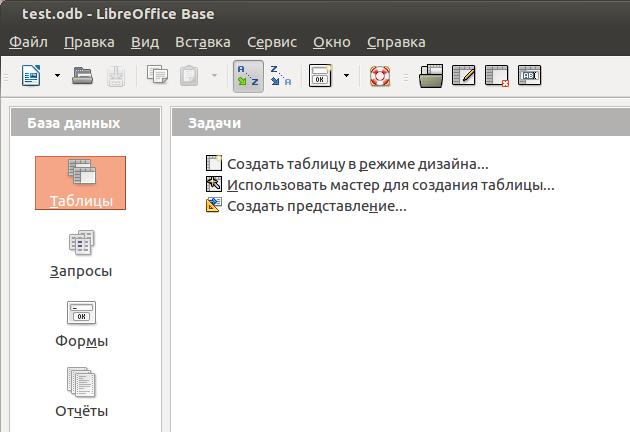
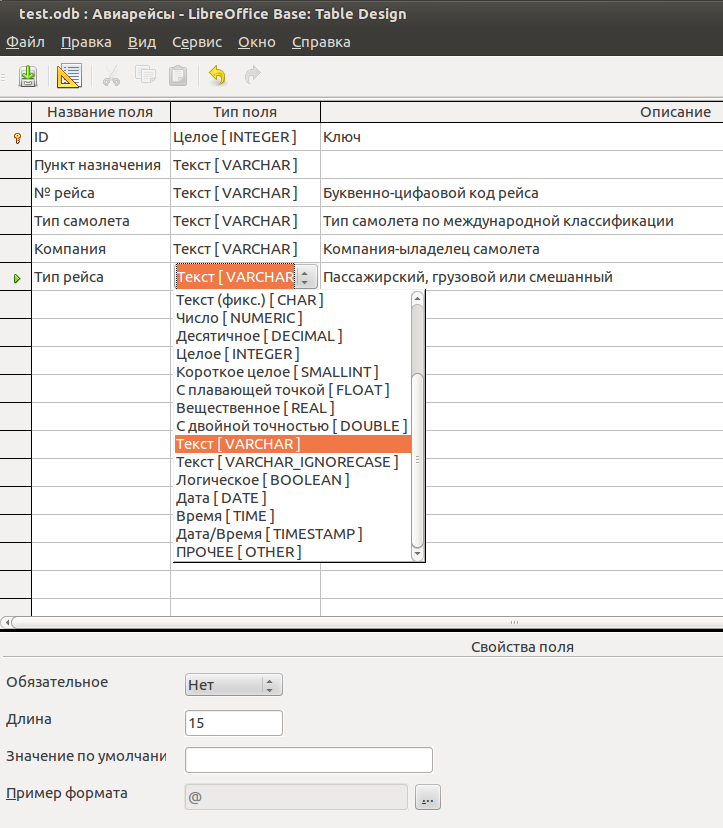
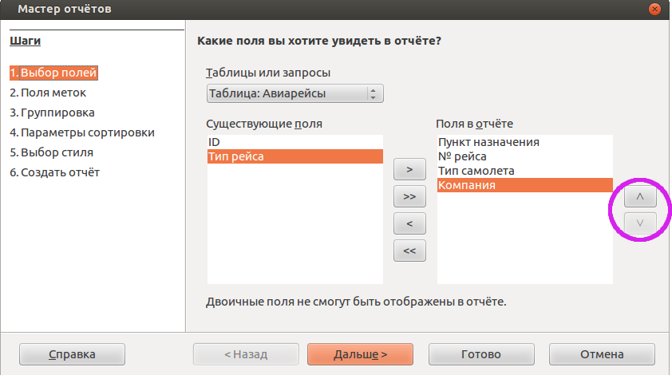
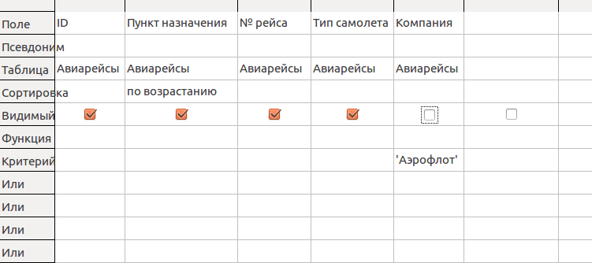
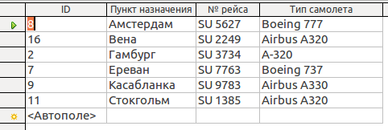
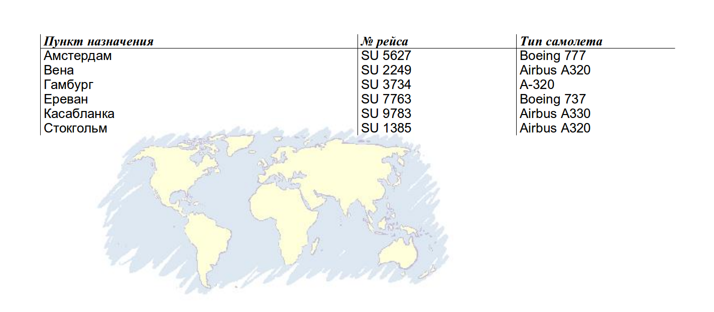
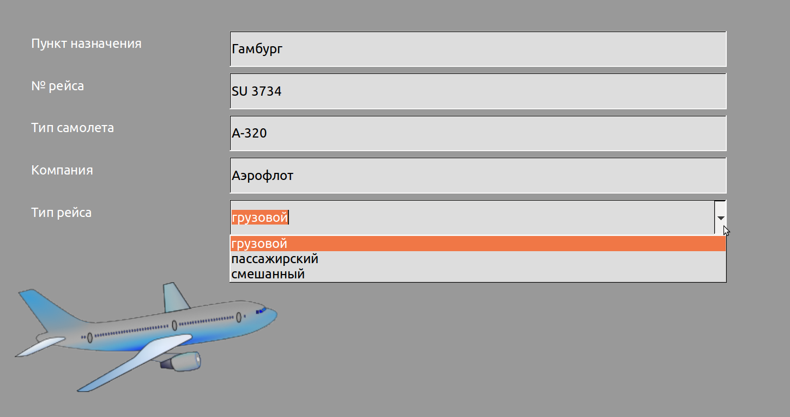
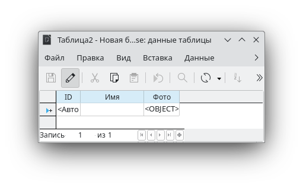
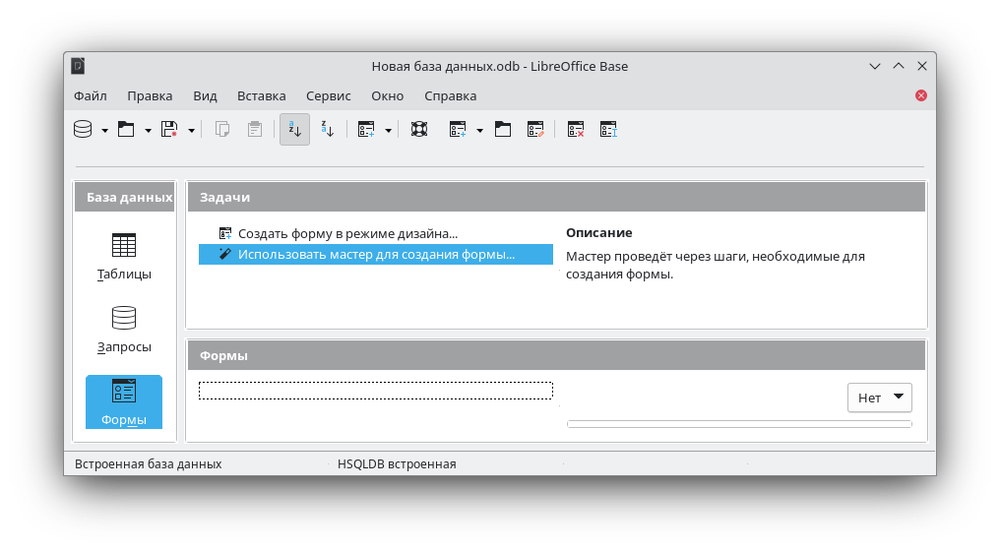

© IGP, март 2025 г.
Проще всего представить себе базу данных как таблицу, в ячейках которой содержатся данные. Базы такого типа называются реляционными.
Каждая строка таблицы соответствует одной записи в базе. Записей может быть сколько угодно, каждая из них отражает свойства конкретного реального объекта. Процесс пополнения базы данных заключается в добавлении новых записей и в редактировании существующих.
Колонки определяют атрибуты (свойства) записей, а значит и реальных объектов. Набор колонок должен быть продуман и определен до создания базы. После того как база создана, добавление новой колонки иногда может быть связано с некоторыми трудностями. Чаще это не так, но лучше все-таки определиться до, а не после.
База данных может состоять из нескольких таблиц и эти таблицы могут быть связаны между собой.
LibreOffice Base позволяет создавать как локальные, так и сетевые реляционные базы данных или подключаться к уже имеющимся базам. В любом случае Base позволяет добавлять и удалять записи, редактировать данные, делать выборки, формировать отчеты.
При щелчке левой кнопкой мыши на элементе Таблицы, в правой нижней части рабочего поля будут перечислены имеющиеся таблицы.
Удобнее всего создавать таблицы в режиме дизайна.
Каждая строка окна Дизайнера таблиц описывает одну колонку создаваемой таблицы. Первая строка Дизайнера соответствует первой колонке таблицы, вторая строка — второй колонке и так далее.
На иллюстрации строки Дизайнера уже заполнены для создания конкретной таблицы.
При проектировании таблицы нужно обратить внимание на два основных момента. Перечень и порядок следования колонок определяют те данные об объекте, которые будут заноситься в базу и то, насколько удобно это будет делать. А свойства этих данных определяют размер файла базы. Это можно пояснить на примере показанной здесь таблицы Авиарейсы.
Каждая колонка таблицы имеет имя, которое задается в графе Название поля. Хорошей практикой, особенно для таблиц с большим количеством колонок, является заполнение графы Описание. В обоих случаях текст просто вводится в нужное поле с помощью клавиатуры. Ширину любой графы можно изменить с помощью мыши.
Изменить порядок следования колонок в таблице или добавить колонку между двумя имеющимися сложно, а часто невозможно.
Графа Тип поля заполняется путем выбора из вариантов, как это показано на иллюстрации для нижней строки (колонка Тип рейса). Для более точной настройки поля в нижней части расположена область Свойства поля. В нем можно указать, что оно является обязательным для заполнения, назначить количество символов в ячейке и определить некоторые другие характеристики.
Количество символов всегда желательно указывать исходя из свойств реальных данных для поля. Дело в том, что, например, для текстовых данных длина поля по умолчанию составляет 100 символов. Именно столько места будет зарезервировано для данных в этом случае. Но, если реальный текст, который будет заноситься в ячейку, состоит максимум из 12 символов, то остальное место будет оставаться пустым.
Первая строка Дизайнера, соответствующая первой колонке таблицы, является ключевым полем. Данные в ней будут появляться автоматически при добавлении каждой новой записи. Здесь это просто номер, который каждый раз увеличивается на единицу. Ключевое поле гарантирует, что в базе ни при каких обстоятельствах не будет содержаться двух одинаковых записей. Они обязательно будут отличаться друг от друга хотя бы ключом.
Полезность баз определяется прежде всего полнотой и актуальностью имеющихся в них данных. А также корректностью их занесения. Первое означает, что при любых изменениях реальных объектов, для которых построена база, эти изменения следует сразу же отражать в таблицах. Для базы Авиарейсы это добавление новых рейсов, изменение типа самолета, изменение пункта назначения и другие подобные.
Второе связано с недопустимостью ошибок ввода данных, что вполне возможно при их ручном вводе. Например, "Air Europa" и "AirEuropa" являются одним и тем же только с точки зрения человека. Для компьютера это разные данные. Такие ошибки могут (и будут) приводить к получению неправильных запросов или отчетов. Несколько обезопасить себя от совершения подобных ошибок можно использованием копирования и вставки уже введенных ранее данных.
С таблицами уже можно делать некоторые полезные вещи. Например, можно сортировать записи по данным в любом столбце (в восходящем или нисходящем порядке). Можно применить фильтр для показа только записей, содержащих определенное поле. Инструменты, предназначенные для таких манипуляций, обведены на иллюстрации овалом.
Обычно получение отчета становится первым действием (а иногда и единственным) после создания таблицы. Всегда приятно посмотреть на результат работы, тем более, что отчеты выглядят достаточно хорошо. К тому же построение отчета является очень простой процедурой и требует буквально всего несколько кликов мышкой.
Отчет - это просто красивая форма представления данных из таблицы. Обычно его создают для последующей печати. В отчет можно включать не все данные таблицы. Выбор производится по целым колонкам - их можно включить в отчет или исключить из него.
Если этого недостаточно, то сначала надо создать запрос, а уже на его основе - отчет. Поскольку запрос тоже является таблицей, то отчет и в этом случае создается так же как для таблицы.
Для создания отчетов имеется мастер, который становится доступен при выделении в левой части рабочего окна LibreOffice Base элемента Отчеты. На первом шаге мастера требуется указать таблицу (или запрос) для построения отчета. Здесь же нужно перенести те поля (колонки) таблицы, данные из которых попадут в отчет.
На иллюстрации данные из колонок ID и Тип рейса не будут фигурировать в отчете. Порядок следования колонок в отчете, в отличие от таблицы, можно легко изменить с помощью кнопок, которые обведены на иллюстрации кружком.
Второй шаг мастера позволяет изменить названия колонок. Это сделано потому, что очень часто колонки в таблицах именуются весьма условно. К примеру, это может быть что типа NR1, Type или что-нибудь похожее. В отчете, конечно же, лучше иметь более осмысленные названия полей.
На третьем шаге мастера определяются поля для группировки данных. В данном случае группировка будет делаться по названию компании.
На четвертом шаге мастера определяются параметры сортировки строк внутри групп.
Пятый шаг мастера позволяет выбрать стиль отчета. Здесь имеется большой выбор. Кроме того, на этом шаге можно задать ориентацию страницы - альбом или портрет.
На шестом, заключительном шаге надо задать заголовок отчета и выбрать его тип - динамический или статический. Различие состоит в том, что динамический отчет будет содержать те данные из таблицы-источника, которые имеются в ней при его открытии.
Другими словами, если данные в таблице изменились даже после создания отчета, в нем они тоже изменятся. Статический отчет, напротив, будет содержать те данные, которые были в таблице в момент его создания. Любая модификация таблицы после создания статического отчета никак не скажется на его содержании.
Некоторые возможности для изменения внешнего вида отчета предоставляет пункт меню Изменить, который вызывает Конструктор отчетов (Report Design). Этот инструмент позволяет изменять положение и размер полей с данными, изменять заголовки, управлять колонтитулами.
К сожалению, работа с Конструктором отчетов не является простым занятием и не очень прозрачна. Зато отчет остается частью базы данных.
Другая возможность для правки связана с тем, что готовый отчет представляет собой обычный документ LibreOffice Writer. Он может быть сохранен в отдельный файл odt (Файл -> Сохранить как) и после этого его можно редактировать, добавлять графику или экспортировать в формат PDF. Здесь нет никаких ограничений. Однако, такой отчет уже будет самостоятельным документом вне базы данных.
Возможность создавать запросы является важнейшим свойством баз данных. Она позволяет получать из одного набора данных множество различных результатов. Создание запросов и получение ответов - это практически единственный способ вести диалог с базой данных.
Результат запроса к базе представляет собой выборку данных из таблицы, сделанную по каким-либо правилам. Поэтому запрос всегда основан на конкретной таблице (или нескольких таблицах). В результате появляется новая таблица. Однако, она не является самостоятельной. При изменении данных в исходной таблице результат запроса также изменится. При удалении таблицы запрос, который на ней основан, также будет автоматически удален.
Для создания запросов в LibreOffice Base имеется три способа.
При выборе варианта Создать запрос в режиме дизайна появляется окно Query Design и предложение добавить таблицы и запросы. Как уже говорилось, запрос должен быть адресован хотя бы одной таблице. Но их количество может быть больше одной. А, поскольку результатом запроса тоже является таблица, то запрос может основываться и на сделанном ранее запросе. Сейчас в базе имеется только одна таблица и запрос будет строиться именно к ней.
В верхней части окна Query Design отображаются источники данных для запроса - таблицы и ранее сделанные запросы, которые были добавлены. В нижней части окна расположена панель построения запроса, тот инструмент, с которым надо работать. Этот инструмент фактически является прототипом той таблицей, которая будет получена в результате запроса. Каждая колонка нижней части Query Design станет колонкой новой таблицы. Все что требуется — это настроить в ней отображение нужных данных.
Для примера будет создан запрос, который выведет записи о рейсах компании Аэрофлот.
Для начала нужно указать, какие данные будут отображаться в каждой колонке новой таблицы. Для первой колонки выбрано поле ID из таблицы Авиарейсы. Для второй - поле Пункт назначения из таблицы Авиарейсы.
Чекбокс в строке Видимый означает, что эти данные в будущей таблице будут отображаться. В последней колонке Компания этот чекбокс не отмечен, поэтому колонка не будет видна. Это не требуется, потому, что из заголовка запроса будет ясно, что речь идет о рейсах Аэрофлота.
В колонке Компания записан Критерий, его значение равно Аэрофлот (кавычки ставить не нужно, программа добавляет их сама). Критерий в данном случае означает, что из таблицы-источника будут выбраны только те записи, которые в поле Компания содержат значение Аэрофлот.
В колонке Пункт назначения установлена сортировка по возрастанию.
После создания запроса окно Query Design можно закрыть.
Для открытия запроса нужно сделать на нем двойной щелчок левой кнопкой мыши.
 В таблице, которая получена в результате запроса, видны все рейсы Аэрофлота, отсортированные в алфавитном порядке по Пункту назначения. Запрос всегда является динамическим. Таблица, полученная в ходе запроса просто отражает данные из таблицы-источника. Поэтому верно и обратное - изменение данных в таблице-запросе меняет их и в таблице-источнике. Из этих соображений не следует редактировать таблицу-запрос.
На основе запроса можно построить отчет так же, как это делается в случае таблицы.
Запрос может содержать несколько критериев отбора. Часто нужно получить записи, которые содержат любое из нескольких значений. Такие варианты записываются в строках Или.
Могут быть и другие ситуации, например требуется получить записи, которые не содержат значение. Или содержат максимальное значение. Для таких случаев в Query Design имеется поле Функция.
Форма это просто удобный интерфейс для ввода данных и их редактирования в таблицах. Форму можно представить себе как трафарет, сквозь прорези которого видны поля одной строки таблицы. Этот трафарет можно сдвигать от строки к строке.
Можно заполнять базу путем наполнения и редактирования ячеек исходной таблицы. Часто так и делают. Но в больших базах этим могут заниматься совершенно разные люди, которые имеют доступ только к части данных и отвечают только за свой участок работы. К тому же ее можно сделать красивой, добавить на нее логотип и в результате получить законченный программный продукт, который не стыдно продемонстрировать.
Самый простой способ создания формы — использовать мастер. Он запускается после щелчка левой кнопкой мыши на пункте Использовать мастер для создания формы в правой верхней части рабочего поля.
На первом шаге мастер предложит выбрать таблицу или запрос для создания формы и перенести в нее нужные поля. Как уже говорилось, запросы лучше не использовать для занесения данных. Надежнее работать с исходной таблицей.
Второй шаг — Установка субформы - можно пропустить. Он нужен в тех случаях, когда имеются вложенные формы. При пропуске этого шага следующие два также не выполняются.
На пятом шаге производится выбор варианта расположения элементов формы из нескольких предложенных. Здесь лучше попробовать разные, чтобы получить о них представление.
Шестой шаг — Выбор режима источника данных — позволяет наложить некоторые ограничения на работу оператора с формой, а значит и с базой в целом.
На седьмом шаге мастера производится выбор стиля. Имеет смысл посмотреть их все, а затем выбрать наиболее подходящий.
Восьмой шаг — завершающий. Здесь надо будет задать имя для формы и подтвердить ее сохранение.
Навигация по записям таблицы производится инструментами в нижней левой части рабочего пространства.
Любые опечатки при вводе данных в таблицы будут приводить к получению неправильных запросов и
отчетов.
Одним из вариантов решения проблемы является копирование и последующая вставка
содержимого ячеек.
При работе с формой имеется еще один способ свести ошибки такого рода к
минимуму — поле со списком. Поле ввода в этом случае можно сделать невосприимчивым к
набору
данных на клавиатуре. Эти данные надо будет выбирать из заранее составленного списка.
В поле со списком будет преобразована колонка Тип рейса. В ней имеется три варианта заполнения ячеек — пассажирский, грузовой и смешанный. То же самое могло бы быть сделано для колонки Тип самолета и в других подобных случаях, когда имеется разумное количество вариантов.
Варианты заполнения ячеек для колонки Тип рейса должны быть помещены в отдельную таблицу. Такие таблицы обычно называют справочниками. Любая реальная база данных использует множество справочников — адреса, названия организаций, выбор даты и другие.
В таблице Авиарейсы имеется колонка Тип рейса. Требуется создать еще одну таблицу Справочник - Тип рейса. В этой дополнительной таблице тоже будет колонка Тип рейса. Эта колонка будет единственной и она же будет ключом. Одноименные колонки в обеих таблицах должны иметь одинаковый тип данных.
В таблице Авиарейсы колонка Тип рейса имеет следующие характеристики:
Надо создать таблицу Справочник - Тип рейса с единственной колонкой Тип рейса, которая имеет точно такие же характеристики. И затем заполнить эту новую таблицу данными.
Нужно создать связь ячеек колонки Тип рейса таблицы Авиарейсы с одноименной колонкой таблицы Справочник — Тип рейса. Такой тип связи носит название "один ко многим".
Для создания связей служит пункт главного меню LibreOffice Base Сервис -> Связи.
При его вызове отрывается окно Добавить таблицы.
Связь делается так: мышкой выделяется поле Тип рейса в таблице Авиарейсы и, при нажатой левой кнопке мыши, курсор ведется к полю Тип рейса таблицы Справочник - Тип рейса. Должна образоваться связь. Если этого не произошло и появилось сообщение об ошибке (смысл которого обычно бывает трудно понять), то в первую очередь надо проверить, совпадает ли тип и длина данных в связываемых колонках.
Для того, чтобы редактировать готовую форму, надо открыть ее меню по щелчку правой кнопки мыши на названии формы и выбрать пункт Изменить. Форма откроется в Режиме разработки, который имеет достаточно много возможностей для изменения внешнего вида и отображаемых данных.
Форма содержит Элементы управления, например, такие как поля ввода. Типов элементов управления достаточно много — Кнопки, Метки, Флажки, Текст и другие. В том числе и Поле со списком. Элементы управления можно объединять в Группы. Это позволяет управлять группой элементов как единым объектом. Все это можно перемещать, масштабировать, настраивать вид и отображаемые данные.
Для выделения объекта (элемента управления или группы) надо сделать на нем щелчок левой кнопкой мыши. По щелчку правой кнопки мыши как обычно будет появляться частное меню объекта.
Рабочее пространство Режима разработки имеет три панели инструментов. Все активные кнопки снабжены всплывающими подсказками.
Верхняя панель - это стандартная панель всех приложений LibreOffice.
Левая панель служит для добавления в форму новых элементов управления.
Нижняя панель позволяет настраивать имеющиеся в форме элементы управления и саму форму в целом.
Для того, чтобы не пришлось закрывать Режим разработки каждый раз при внесении изменений, имеется одноименная кнопка (вторая сверху в левой панели инструментов), которая позволяет временно вернуться в обычный режим для проверки работы формы.
При выделении объекта Тип рейса выделяется не только поле ввода, но и текст, который ему сопутствует. Это происходит потому, что элементы объединены в группу. Для изменения только поля ввода надо воспользоваться пунктом частного меню объекта (по щелчку правой кнопки мыши на нем) Группировка -> Войти в группу. После этого можно выделить только поле ввода и настраивать именно его.
Выделено поле ввода, а его частное меню дает возможность Заменить на -> Поле со списком, что и требуется. Осталось указать, какие данные будут отображаться в этом поле и как. Для этого служит окно Свойства, которое вызывается с помощью пункта частного меню Элемент управления. Внесенные изменения на иллюстрациях внизу отмечены овалами.
В форме появилось поле, в которое можно занести только данные из заранее составленного списка.
Форма представляет собой по сути обычную страницу LibreOffice.
Поэтому пункт главного меню Формат -> Страница дает доступ ко всем ее настройкам —
размеру, ориентации, цвету фона и другим.
Кроме того, и форма, и ее элементы имеют множество управляемых свойств, настроив которые можно
получить очень неплохой результат.
Точно так же, как в других приложениях LibreOffice, в Base на страницу с формой можно добавить изображение, например, логотип — пункт главного меню Вставка -> Изображение -> Из файла (в режиме редактирования формы Изменить).
Кроме сухой текстовой информации в таблицах базы данных могут содержаться различные мультимедийные объекты, простейшим видом которых являются картинка
Картинки или, как правильнее их называть изображения, — хранятся в файлах в определенных форматах. Например, jpeg, png, gif и др.
Для хранения картинок в базе существует специальный тип поля LongVarBinary — длинное, переменной длины, двоичное.
Создайте новую таблицу со следуюцими полями:
Запишите сруктуру таблицы.
Откройте таблицу в режиме ввода данных.
Просто так, в режимер ввода данных в запись изображение не вставить.
Для этого удобно использовать форму.
Создаем форму, на сонове полей этой таблицы. Например, с помощью мастера.
В поле Имя информация вводится с клавиатуры.
Для установки картинки делается двойной щелчок на поле картинки и выбирается файл.
Перемещение по полям производится клавишей Таб.
Примеры картинок для вставки в базу (откроется в новом окне).
Для перемещения по записям используется панель внизу формы.